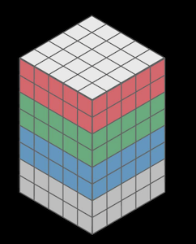

Notes for wwdc2018/219 and wwdc2018/416
Why memory and CPU matter?

- It is obvious that too much usage of
CPUhas negative impact onbattery lifeandresponsiveness. - But, if you application consumes too much memory, that causes more
CPU utilization, which have negative effects onbattery lifeandperformance.
Basic Concepts
Buffers
Buffer is contiguous region of memory.
It is often viewed as sequence of elements of the same sizes, usually of the same internal construction.

Image Buffers
One kind of the important buffers is the
Image Buffer, which holds thein-memory representation of some image.
Each element in image buffers describes the color and the transparency of single pixel in our image. Constantly, the buffer size is proportional to image size. For example, in the image with sRBG format, each 32 bits describes the color and transparency of a single pixel. The buffer size = 4 byte x image_width x image_height

Frame buffer
The frame buffer is what holds the actual rendered output of your application.
As your application updates its view hierarchy UIKit will render the application’s window and all of its subviews into the frame buffer. And that frame buffer provides per pixel color information that the display hardware will read in order to illuminate the pixels on the display.
Related resource: The View Drawing Cycle
The pipeline is like this:

Data Buffer
a data buffer is just a buffer that contains a sequence of bytes.
If we’ve downloaded images from the network or we’ve loaded them from disk. A data buffer that contains an image file, typically, begins with some metadata describing the size of the image that’s stored in that data buffer.

- Store contents of an
image filein memory. Thesizeis the same as that in the image file in the disk. - Metadata describing dimensions of image
- Image itself
encodedas JPEG, PNG, or other (usually compressed) form - Bytes
do notdirectly describe pixels
The Pipeline in Action
Consequences of Excessive Memory Usage
- Increased fragmentation.
fragment: The large allocation that is in your application’s address space could force other related content apart from content that it wants to reference.
- Poor locality of reference
System starts
compressingmemory Process termination- Eventually, if your application starts accumulating a lot of memory usage the operating system will step in and start transparently
compressingthe content of physical memory. Now, the CPU needs to be involved in this operation so in addition to any CPU usage in your own application. You could beincreasing global CPU usagethat you have no control over. Eventually, your application could start consuming so much physical memory that the OS needs to startterminating processes. And it’ll start with background processes of low priority.
- Eventually, if your application starts accumulating a lot of memory usage the operating system will step in and start transparently
You app may be terminated by the system
- Cause
CPU peak, and then has negative impact on battery life and responsiveness.
Decoding
Decoding is an operation that will convert the JPEG or PNG or other encoded image data into per pixel image information.
CPU-intensive process
The memory used for the image buffer is proportional to original image size, not view size.
- There are persistent large memory allocation in decoding.
- The image buffer is retained for repeat rendering by UIImage.
After decoding, UIImage will hang onto that image buffer, so that it only does that work once. Consequently, your application, for every image that gets decoded, could have a persistent and large memory allocation hanging out.
The memory use of an image using sRGB space
Memory use is related to the dimensions of the images, not the file size.
Take the following image as an instance, its file size is 590KB, with dimension 2048 x 1536 pixel.
4 byetes for each pixel in RGBA
By this article, each pixel in sRGB image needs 32bit, 4 bytes, in memory when it’s decoded. Because in sRGB, there are Red, Green, Blue 3 channels and Alpha. The range of each channel value is from 0 to 255, which needs 8 bits to represent the value.
1 | A R G B A R G B A R G B |
More memory usage when decoding a image
A image have load -> decode -> render these 3 phases.
We only need 590KB to load a image, while we need2048 pixels x 1536 pixels x 4 bytes per pixel = 10MB when decoding
Image Rendering Pipeline
UIImageis responsible for loading image content. Usually, it is bigger than the ImageView that is going to display it.UIImageViewis responsible for displaying the image. The image which it is going to display will be shrink down to fit its size.
Downsampling
So, we can use technique, called Downsampling, to downsample the images to the size that they're going to be displayed. Rather than having these large allocations hanging around, we’re reducing our memory usage.

1 | // Downsampling large images for display at smaller size |
Decoding in ScrollViews
The cause of the ScrollView hitch

When beginning scrolling, we’re about to display another row of images. And we’re about to ask Core Graphics to
decodethose images before we hand the cells back to UICollectionView.
And that could takea lot of CPU time. So much so, that wedon'tget around tore-rendering the frame buffer. But thedisplay hardwareis operating on afixed interval. So, from the user’s perspective the application has juststuttered. Now, we’re done decoding these images, we’re able to provide those cells back to UICollectionView. And animation continues on, as before. Just saw avisual hitch,
Two techniques to smooth out CPU usage
- prefetching
- performing work in the background
Thread Explosion
It is caused by
- More images to decode than available CPUs
- GCD continues creating threads as new work is enqueued
- Each thread gets less time to actually decode images
Now, to avoid deadlock when we dispatch asynchronously to a global queue, GCD is going to create new threads to capture the work we’re asking it to do. And then, the CPUs are going to spend a lot of time moving between those threads to try and make incremental progress on all of the work we asked the operating system to do for us. And switching between those threads, actually, has a pretty significant overhead.
we’re going to serialize some work.
So, rather than simply dispatching work to one of the global asynchronous queues, we’re going to create a serial queue. And inside of our implementation of the prefetch method we’re going to asynchronously dispatch to that queue.

Image Sources
Images may come from
- Image assets in asset catalog
- Files in application/framework bundle
- Files in Documents and Caches directories
- Data downloaded from network
This session suggests us to use image assets for the following reasons:
Optimized name- and trait-based lookup
- It’s
fastertolook upan image asset in the asset catalog, than it is to search for files on disk that have a certain naming scheme.
- It’s
Smarter buffer caching
- The asset catalog runtime has, also, got some really good smarts in it for managing
buffer sizes.
- The asset catalog runtime has, also, got some really good smarts in it for managing
Per-device thinning
- your application only downloads image resources that are relevant to the device that it’s going to run on and vector artwork. The
Vector artwork
Vector artwork
- Since iOS 11, image assets support “Preserve Vector Data”
- Avoids blurriness and aliasing when drawn larger or smaller than natural size
Image Rendering Format
SRGB
- 4 bytes per pixel
- full color images
- most common used
Wide format
- 8 bytes per pixel
- super accurate colors. Because they use 8bytes, 16 bits, for each channel. In the meantime, double the image size.
- Only useful with wide color display. We don’t want to use it when we don’t need to.
- Wide color capture cameras since iPhone 7

Luminance and alpha 8 format
This image only holds grayscale value. And the image size is smaller.
- 2 bytes per pixel
- Single-color iamges and alpha
Most used in Metal shaders, not very common.

Alpha 8 Format
1 byte per pixel
- Userful for monochrome images because it uses less memory.
- masks
- Emoji-free text
- 75% smaller than SRGB
We can also change image.tintColor in this image without changing its format.
How do I pick the right format?
UIGraphicsBeginImageContextWithOptions always uses SRGB rendering-format, which use 4 bytes per pixel.
while UIGraphicsImageRenderer, which introduced in iOS 10 will automatically pick the best graphic format in iOS12. It means, you will save 75% of memory by replacing UIGraphicsBeginImageContextWithOptions with UIGraphicsImageRenderer
Do ✅

Use ImageIO to downsample images
UIImage is expensive for sizing and to resizing
- Will decompress original image into memory
- Internal coordinate space transforms are expensive
Don’t ❌

Use ImageIO
ImageIO can read image sizes and metadata information without dirtying memory.
ImageIO can resize images at cost of resized image only.
Do ✅
The bad is that you have to specify some options.
Resize image effectively
This is a function of resizing image without reading it into the memory, using ImageIO.
1 | func resize(url: NSURL, maxPixelSize: Int) -> CGImage? { |
Optimizing when in the background
foreground/background
The strategy is simple, when UIApplicationDidEnterBackground, we unload images; and when UIApplicationWillEnterForeground, load images.
on-screen/off-screen
unload large resource when off-screen, viewDidDisappear; and load large resource when on-screen, viewWillAppear.
Debug
Use memory graphs to further understand and reduce memory footprint
Ref
Related
scan qr code and share this article